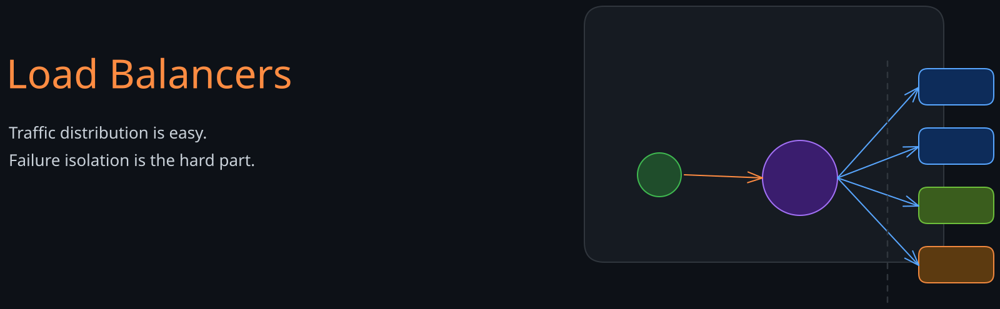
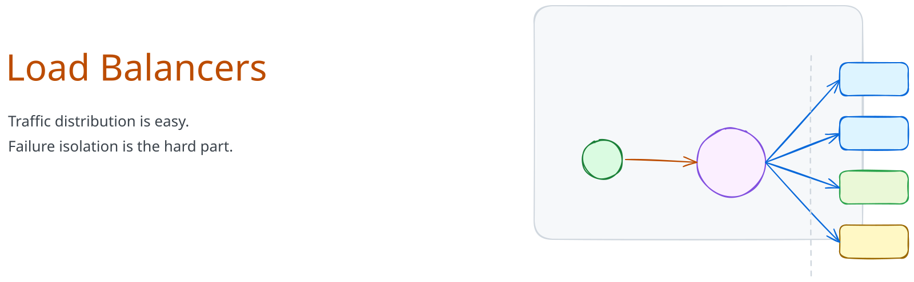
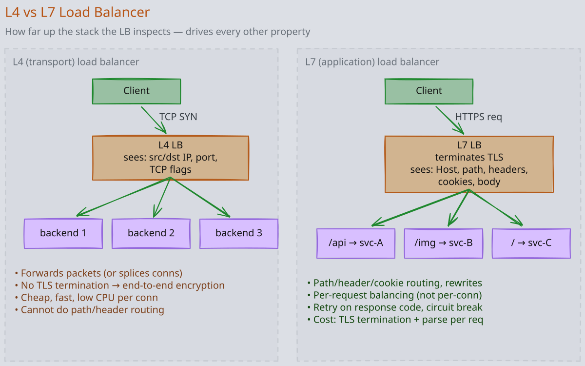
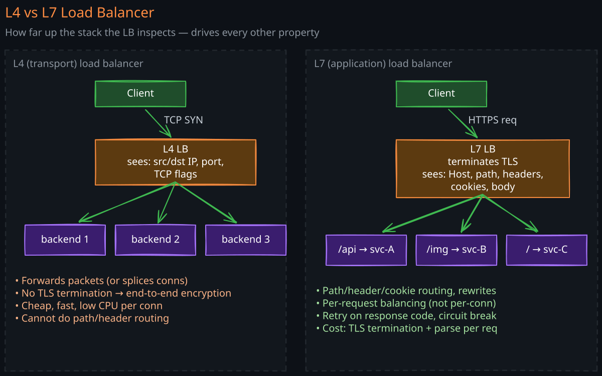
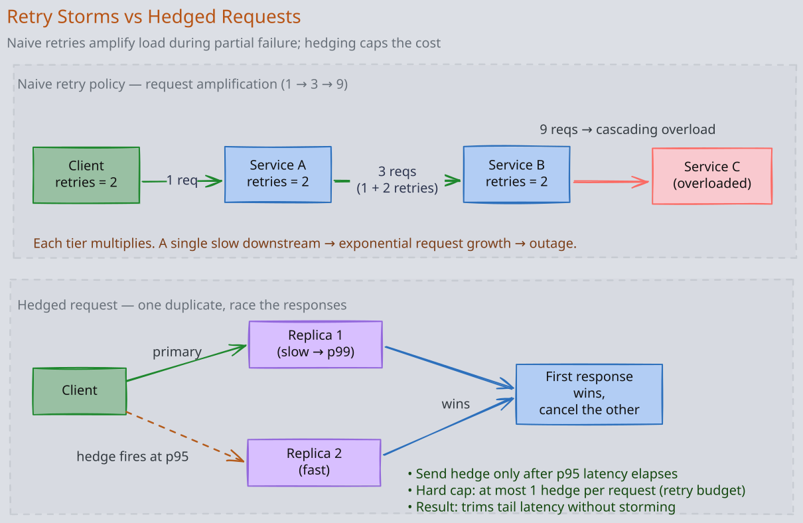
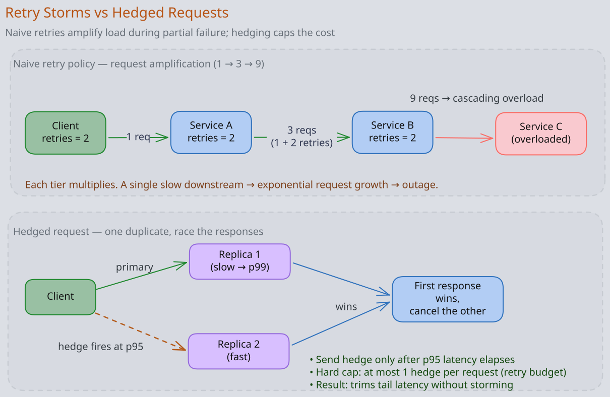

Load Balancers — L4 vs L7, Algorithms, and Topologies
A load balancer is the device, software, or service that distributes incoming network traffic across a pool of backend servers. At staff level the interesting questions are not “what is round robin” but: what layer are you balancing at, how does the algorithm interact with your traffic shape, and what does the failure mode look like when a backend goes bad.
The Story
In 2016, Google published the Maglev paper and quietly deflated the mystique around the expensive hardware load-balancer appliance. Maglev was a software load balancer running on ordinary commodity Linux machines, with routers spraying packets across an active-active pool and each box forwarding flows at line rate. The clever part was not a prettier round-robin loop; it was a consistent-hashing table plus connection tracking so packets for the same flow kept landing on the same backend even as machines failed or joined. Google had used the system in production for years at the front door of its services, the place where load-balancer mistakes become global incidents. The anchor is that the old F5-shaped mental model gave way to a fleet of boring servers — because at internet scale, software you can add by the rack beats hardware you buy by the appliance.
1. The Layer Decision: L4 vs L7
The OSI layer at which the LB inspects traffic determines what it can do and what it costs.


1.1 L4 (Transport-Layer) Load Balancing
The LB sees TCP/UDP packets and a 4-tuple (source IP, source port, destination IP, destination port). It does not terminate TLS, parse HTTP, or look at the payload.
Behavior:
- Picks a backend per connection, not per request.
- Once a connection is bound, all packets ride the same backend until close.
- Forwards bytes opaquely.
Examples: AWS NLB, GCP TCP/UDP LB, HAProxy in TCP mode, Linux IPVS, Envoy in TCP proxy mode.
Strengths:
- Lowest latency — microseconds of overhead, often hardware-accelerated.
- Highest throughput — DSR (Direct Server Return) variants can push millions of pps per node.
- Protocol-agnostic — works for any TCP/UDP traffic (databases, custom protocols, mTLS pass-through).
- Smaller attack surface — no TLS keys, no HTTP parser bugs.
Weaknesses:
- Cannot route by URL, host header, cookie, or any HTTP attribute.
- Cannot retry, redirect, or rewrite — those are application-layer concepts.
- Long-lived connections (HTTP/2, gRPC, WebSockets) stick to one pod for hours, breaking even load distribution.
- No visibility into application errors (a backend returning 500s for an hour looks healthy at L4).
1.2 L7 (Application-Layer) Load Balancing
The LB terminates the connection, parses the application protocol (almost always HTTP), and forwards per-request.
Behavior:
- Picks a backend per request.
- Can route on path, host, headers, cookies, JWT claims.
- Can retry, hedge, rewrite, transform, compress, rate-limit.
Examples: AWS ALB, GCP HTTPS LB, NGINX, Envoy, HAProxy in HTTP mode, Cloudflare, Istio’s ingress gateway.
Strengths:
- Per-request load balancing fixes the long-lived-connection imbalance problem (critical for gRPC and HTTP/2).
- Sophisticated routing (canary deployments by header, A/B traffic splits, blue/green by weight).
- Observability — every request logged with method, path, status, latency.
- Active health checks at the application layer.
- TLS termination and re-encryption topology choices.
Weaknesses:
- Higher latency and CPU per request.
- TLS termination means the LB holds keys — a bigger blast radius if compromised.
- Bound to specific protocols (HTTP/1.1, HTTP/2, gRPC, sometimes HTTP/3).
- More complex configuration surface.
1.3 When to Pick Which
- L4 for: databases, mTLS-passthrough services, non-HTTP custom protocols, raw throughput requirements (>10 Gbps per node), simplest possible fronting of a service.
- L7 for: anything HTTP-based, anywhere routing decisions depend on URL or header, anywhere you want per-request distribution (especially gRPC and HTTP/2 backends).
- Both in many production stacks: edge L4 LB sits in front of an L7 proxy fleet. NLB → ALB or NLB → Envoy is a common pattern.
2. Algorithms
The algorithm picks which backend handles the next connection (L4) or request (L7). Picking the right one matters more than picking the cheapest.
2.1 Round Robin
Cycle through backends in order. Trivial, stateless, and surprisingly often the wrong answer because it ignores backend load. Works only when backends are truly homogeneous and request costs are uniform.
2.2 Weighted Round Robin
Round robin with per-backend weight. Useful during gradual capacity adds, canary releases, or heterogeneous instance sizes. Same blind-spot as round robin within a weight class.
2.3 Least Connections / Least Outstanding Requests
Pick the backend with the fewest active connections (L4) or in-flight requests (L7). Surprisingly effective because it auto-adapts to slow backends — a struggling pod accumulates open requests, so it stops getting new ones. This is the default in many production LBs (Envoy’s LEAST_REQUEST).
A subtle variant: least-loaded with the power of two choices — pick two random backends and send to the less-loaded of them. Approximates least-loaded with O(1) state and avoids herd effects on a single “best” backend.
2.4 Consistent Hashing
Hash a request attribute (source IP, session ID, cache key) to a position on a ring; backends own ring segments. Same key always routes to the same backend (modulo backend membership changes).
Use when:
- You need cache locality (route the same key to the same cache server) — see Consistent-Hashing.
- The backend is stateful per key (sharded DB, sticky sessions).
- You want minimal reshuffling when a backend is added or removed.
The standard real-world implementation uses bounded loads (Google’s “consistent hashing with bounded loads”) so a hot key doesn’t melt one backend.
2.5 Ring Hash vs Maglev
Two consistent-hash families used in production:
- Ring hash (classic): place virtual nodes on a circle; hash key to the next node. Adding a backend reshuffles
1/Nof keys. - Maglev hash (Google): builds a permutation table per backend; lookups are O(1) and the table is more uniform than ring hash. Envoy supports both.
2.6 Random
Pick a backend uniformly at random. Cheap, no state, good entropy. Combined with health checks it’s a reasonable baseline for stateless workloads.
2.7 IP Hash / Session Affinity
Hash the client IP to bind a client to one backend. Used when the application keeps in-memory session state. Generally a smell — externalize state to a cache or DB and use stateless algorithms instead.
3. Health Checks: The Most Underrated LB Feature
A load balancer that routes to a dead backend is worse than no load balancer. Health checks are how an LB decides which backends are eligible.
3.1 Active vs Passive
- Active: LB polls each backend on a schedule. Catches problems fast; adds load on healthy backends. Always have these.
- Passive (outlier detection): LB watches real traffic and ejects backends that fail too many requests. Catches application-layer brownouts an active check would miss (a backend that responds 200 to
/healthzbut 500 to real traffic). Envoy ships this out of the box.
Run both. Active health checks alone miss “the app is up but its DB connection is dead.” Passive checks alone are slow to react.
3.2 What to Probe
- Liveness (“is the process alive”): cheap, ignores dependencies. Failing this should restart the pod.
- Readiness (“is this instance ready for traffic”): deeper check that validates downstream dependencies (DB pool, cache, config). Failing this removes it from the LB pool but does not restart it.
- Don’t make the readiness probe call every downstream — a flap in Redis takes down your whole fleet. Probes should be local and fast.
3.3 Eject and Recover Carefully
- Ejection threshold: how many consecutive failures cause removal. Too tight → fleet flaps under transient errors. Too loose → users see errors for a long time.
- Base ejection time: minimum time a backend stays ejected. Should be longer than the recovery time of typical incidents.
- Recovery probing: never re-add at full traffic. Slow-start ramp-up (1%, 10%, 50%, 100%) avoids hammering a freshly-recovered backend.
3.4 The Cascading Ejection Trap
Outlier detection that ejects “too many” backends can amplify an outage: half the fleet looks unhealthy, traffic concentrates on the rest, they fall over, the LB ejects them too, and now everyone is ejected. Envoy and modern LBs cap ejection at a percentage of the pool (max_ejection_percent) precisely to avoid this.
4. Connection vs Request Balancing Pathologies
4.1 gRPC over an L4 LB
The textbook gotcha. A gRPC client opens one HTTP/2 connection to the LB; the LB pins it to one pod. Every subsequent RPC rides that pod. As pods scale up, the new pods stay cold.
Fixes:
- Use an L7 LB that understands HTTP/2 (Envoy, ALB).
- Use client-side LB (gRPC native, with xDS or DNS-based pod discovery).
- Force periodic reconnects (
GOAWAYfrom server orMAX_CONNECTION_AGEsetting).
Same pattern applies to any long-lived multiplexed connection: HTTP/2, HTTP/3, WebSockets.
4.2 Sticky Sessions Trapping Hot Users
Session affinity sends a celebrity user’s traffic to one pod forever. That pod melts. Avoid sticky sessions wherever you can; if you can’t, combine with rate limits per session.
4.3 Slow-Start Avalanche
A new pod joins the pool and gets equal share immediately. Its JIT warmup, cache warmup, and connection pool warmup mean the first 30 seconds of requests have P99 5–10× the steady state. Solution: slow-start ramp-up (most LBs support this; Envoy via slow_start_config).
4.4 Thundering Herd on LB Failover
The active LB dies; the standby takes over; every client reconnects in the same second. The new LB and its backends both spike. Mitigations: jittered client reconnect, multi-active LB architectures (DNS-based or anycast), connection draining on the failing LB.
5. Topologies
5.1 Single Centralized LB
A pair of LB appliances (active/passive) fronting everything. Simple, easy to operate, terrible blast radius. Practically extinct at FAANG scale.
5.2 Edge LB → L7 Proxy Fleet → Backends
The canonical public-facing stack:
- Edge: anycast L4 LB (NLB, AWS Global Accelerator, GCP Cloud Load Balancing) terminating TCP and forwarding to the nearest region.
- Regional: L7 proxy fleet (Envoy, NGINX) doing TLS termination, routing, retries, telemetry.
- Backends: pods/services.
5.3 Client-Side LB (xDS, gRPC-LB, Eureka + Ribbon)
The client knows about all backends and picks one itself. No middlebox per request → lower latency, no LB scaling problem. But every client must implement health checking and discovery. This is what Eureka + Ribbon did historically; modern stacks use xDS or DNS-based discovery (Kubernetes headless services).
Best for east-west service-to-service inside a controlled environment.
5.4 Service Mesh (Sidecar LB)
Each pod has an Envoy sidecar that handles outbound LB, retries, mTLS, and telemetry. The application sees localhost; the sidecar does the hard work. Centralized config via xDS.
5.5 Global LB (Anycast + GeoDNS)
For multi-region: announce the same IP from many regions via BGP anycast; let the internet’s routing pick the nearest entry point. Or use GeoDNS to resolve to a region-specific IP. Anycast is faster and self-healing; GeoDNS is more controllable.
Discussed in depth in DNS-GeoDNS-Anycast.
6. Retries, Timeouts, and Idempotency
A load balancer that retries can paper over transient failures — or amplify a small outage into a meltdown. The rules:
- Only retry idempotent operations. GET, PUT, DELETE generally yes; POST without an idempotency key generally no.
- Retry with exponential backoff and jitter. Without jitter, every client retries in the same millisecond.
- Budget retries: cap retries per request (e.g., 3) and per second across the fleet (Envoy’s
retry_budget). Without a budget, every retry storm doubles load on a failing backend. - Set timeouts at every layer and make outer timeouts longer than inner timeouts. A 5s timeout at the LB and a 30s timeout at the backend produces orphaned requests that succeed at the backend but the user already gave up.
- Hedged requests: send the same request to two backends after a timeout, take whichever responds first. Mitigates tail latency at the cost of doubled load on slow paths. Use sparingly and only for read-heavy idempotent operations.


7. Common Failure Modes
- LB-shaped DDoS: a small TCP-SYN flood overwhelms an L7 LB doing TLS termination because TLS handshakes cost CPU. An L4 LB in front (or AWS Shield, Cloudflare) absorbs it.
- Connection draining missed during deploy: terminating pods drop in-flight requests because the LB hasn’t been told to stop sending new ones. Always use connection draining and pre-stop hooks.
- TIME_WAIT exhaustion on the LB: high connection churn fills the ephemeral port range. Mitigations: connection pooling,
SO_REUSEPORT, keep-alive on backend connections. - Health check hammering: 100 LB nodes each probing every backend every second = 100× the real traffic. Coordinate probes or use passive checks.
- Cross-AZ traffic costs: an LB in AZ-a routing 50% of requests to AZ-b doubles your inter-AZ bandwidth bill. Use AZ-aware routing (Envoy’s “locality-weighted LB”) when possible.
8. Related Notes
- Consistent-Hashing — the algorithm behind cache-friendly load balancing
- Eureka, Netflix Zuul, Ribbon — Netflix LB stack
- Resilience4j — client-side retries and circuit breaking
- Bulkhead Pattern — isolating failures across pools
- Service mesh — sidecar load balancing
- DNS-GeoDNS-Anycast — global LB strategies
- HTTP-1-2-3 — why HTTP/2 long-lived connections complicate LB
Revision Summary
- L4 LBs balance connections at the transport layer — fast, protocol-agnostic, but blind to per-request load and HTTP semantics. L7 LBs balance per-request — necessary for HTTP/2 and gRPC, more expensive, more powerful.
- Algorithm choice matters more than people think. Least-connections (or P2C) is a safe default; consistent hashing for cache locality; round robin only for truly uniform workloads.
- Health checks need both active (cheap, predictable) and passive (catches application brownouts). Cap ejection percentages to avoid cascading removal.
- The classic gRPC-on-L4 trap pins all requests from a client to one backend. Use L7 LB, client-side LB, or periodic connection cycling.
- Retries amplify outages without budgets and jitter; sticky sessions trap hot users on one pod; slow-start ramps protect freshly-joined pods.
- Modern topology is edge L4 → regional L7 → backends, increasingly supplemented by client-side LB or sidecar meshes for east-west traffic.
Deep Understanding Questions
- Your gRPC service runs 30 pods behind an AWS NLB. One pod’s CPU is at 95% while the rest sit at 10%. The team blames “noisy neighbor” but the metrics show even request rates per pod across the clients. What is actually happening and how do you fix it?
- You enable outlier detection that ejects backends after 5 consecutive 5xx. During a downstream DB blip, 80% of your pods get ejected within 10 seconds. Walk through the cascade and propose two configuration changes that would have contained it.
- Compare consistent hashing vs least-connections for a cache fleet of 50 nodes. Under what conditions does each algorithm degrade, and what hybrid would you propose for a real-world cache where the key distribution is skewed?
- Your edge LB has a 5-second timeout; the backend has a 30-second timeout. Trace a request that takes 20 seconds at the backend: what does the user see, what does the backend log, and what is the orphaned-work cost? Fix the configuration.
- A celebrity user’s traffic pins to one pod due to source-IP hash. The pod melts. Three engineers propose: (a) increase the pod size, (b) replicate state to all pods, (c) move state out of the pod and switch to least-connections. Score each by cost and correctness.
- Hedged requests double-send after a P95 timeout to mitigate P99 latency. Under what failure mode does this increase P99 latency, and what guardrails prevent it?
- Your ingress fleet does TLS termination, parses HTTP/2, and applies WAF rules. CPU is 60% TLS handshakes. Rank these fixes by impact and cost: (a) session resumption, (b) move to TLS 1.3, (c) put an L4 SYN-flood absorber in front, (d) kTLS offload, (e) ECDSA instead of RSA.
- You move from a single centralized LB pair to a fleet of 30 Envoy proxies fronted by an anycast NLB. List three failure modes the new architecture introduces that the old one did not, and how you’d detect them.